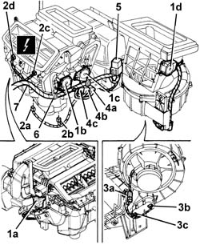

5040D90 air conditioner system wiring bundle - r r
- Path
- Procedures > 50 AUXILIARY UNITS > 5040 AIR CONDITIONING CASING AND COMPONENTS > 5040D air conditioner controls > 5040D90 air conditioner system wiring bundle - r r
- Kind
- repair procedure (removal / refitting; the operation number is the code)
- Applies to
- all engines; all production periods
- Interactive page
- https://sloeber94.github.io/elrnDB-a147/en/#/3025454
Applies to: all engines; all production periods
 Removing
Removing
 Refitting
Refitting7055B54 under-engine guard - r r
1048A34 sleeve(s) from flow meter to air supply capacity case - r + r
Drain the coolant (5040A10 Air conditioning refrigerant CIRCUIT - Draining and Refilling ).
7040A65 passenger compartment box lock , one , r r (left and right sides)
3380A44 handbrake/linkage protection - r+r
7040A80 compartment unit on facia r r
5040D18 air conditioner control unit - r r
5580C26 LOCK BARREL KEY/SWITCH for deactivating passenger 'AIR BAG - R.R.
4110A11 steering wheel - r+r for replacement or check for versions with air bag
7040A26 steering column trim - r+r
5550A12 complete stalk unit - r+r for versions with air bag
5560B11 analogue control panel - r+r or replace
5010D56 solar sensor - r r after checking electrical system
5010C12 Windscreen demising VENT - R.R.
7040A09 passenger air bag compartment cover - r r
5580C22 AIR BAG MODULE - Passenger side - R.R.
7040A10 instrument facia trim - r+r
5010B45 duct from climate control system - r r (left and right sides)
5010B56 DUCT between climate control casing and air duct to rear seats - R.R.
7040L40 front compartment scuff strip - r r (left side)
5505A10 electrical junction unit - r+r
5040C10 air conditioner box - r+r
1. Disconnect the electrical connections for the motors (1a, 1b, 1c, 1d).
 | Name | Connector |
|---|---|---|
1a | Left air mixture flap actuator |
| Name | Connector |
|---|---|---|
1b | Air distribution actuator |
| Name | Connector |
|---|---|---|
1c | Right air mixture flap actuator |
| Name | Connector |
|---|---|---|
1d | Air intake actuator |
2. Disconnect the electrical connections of the sensors (2a, 2b, 2c, 2d).
| Name | Connector |
|---|---|---|
2a | Upper treated air sensor |
| Name | Connector |
|---|---|---|
2b | Upper treated air sensor |
| Name | Connector |
|---|---|---|
2c | Lower treated air sensor |
| Name | Connector |
|---|---|---|
2d | Lower treated air sensor |
3. Disconnect the electrical connections (3a, 3b, 3c).
| Name | Connector |
|---|---|---|
3a | Passenger compartment ventilation fan |
| Name | Connector |
|---|---|---|
3b | Fan speed' variator |
| Name | Connector |
|---|---|---|
3c | Fan speed' variator |
4. Disconnect the electrical connections of the additional heater (4a, 4b, 4c) (JTD version only).
| Name | Connector |
|---|---|---|
4a | Additional heater resistor |
| Name | Connector |
|---|---|---|
4b | Additional heater resistor |
| Name | Connector |
|---|---|---|
4c | Additional heater resistor |
5. Release the base with relay (JTD version only).
6. Disconnect the wiring harness retaining collars.
7. Remove the wiring harness assembly.

Applies to: all engines; all production periods
Refitting
RemovingPosition the cable loom.
Engage the base with relay.
Connect the electrical connection.
Secure the wiring harness using retaining clips.
5040C10 air conditioner box - r+r
5505A10 electrical junction unit - r+r
7040L40 front compartment scuff strip - r r (left side)
5010B56 DUCT between climate control casing and air duct to rear seats - R.R.
5010B45 duct from climate control system - r r (left and right sides)
7040A10 instrument facia trim - r+r
5580C22 AIR BAG MODULE - Passenger side - R.R.
7040A09 passenger air bag compartment cover - r r
5010C12 Windscreen demising VENT - R.R.
5010D56 solar sensor - r r after checking electrical system
5560B11 analogue control panel - r+r or replace
5550A12 complete stalk unit - r+r for versions with air bag
7040A26 steering column trim - r+r
4110A11 steering wheel - r+r for replacement or check for versions with air bag
5580C26 LOCK BARREL KEY/SWITCH for deactivating passenger 'AIR BAG - R.R.
5040D18 air conditioner control unit - r r
7040A80 compartment unit on facia r r
3380A44 handbrake/linkage protection - r+r
7040A65 passenger compartment box lock , one , r r (left and right sides)
Repressurize using coolant fluid (5040A10 Air conditioning refrigerant CIRCUIT - Draining and Refilling ).
1048A34 sleeve(s) from flow meter to air supply capacity case - r + r
Topics linked from this page (43)
- 1048A34 sleeve(s) from flow meter to air supply capacity case - r + r
- 3380A44 handbrake/linkage protection - r+r
- 4110A11 steering wheel - r+r for replacement or check for versions with air bag
- 5010B45 duct from climate control system - r r
- 5010B56 DUCT between climate control casing and air duct to rear seats - R.R.
- 5010C12 Windscreen demising VENT - R.R.
- 5010D56 solar sensor - r r after checking electrical system
- 5040A10 Air conditioning refrigerant CIRCUIT - Draining and Refilling
- 5040C10 air conditioner box - r+r
- 5040D18 air conditioner control unit - r r
- 5505A10 electrical junction unit - r+r
- 5550A12 complete stalk unit - r+r for versions with air bag
- 5560B11 analogue control panel - r+r or replace
- 5560B56 TRIM with SWITCHES/BUTTONS FOR MULTIFUNCTION DISPLAY AND HEADLAMP alignment ADJUSTMENT - R.R.
- 5570T80 car radio unit - r+r
- 5580C18 air bag module - r+r
- 5580C22 AIR BAG MODULE - Passenger side - R.R.
- 5580C26 LOCK BARREL KEY/SWITCH for deactivating passenger 'AIR BAG - R.R.
- 7040A09 passenger air bag compartment cover - r r
- 7040A10 instrument facia trim - r+r
- 7040A26 steering column trim - r+r
- 7040A31 flap assembly - r r
- 7040A37 fuse box cover - r r
- 7040A65 passenger compartment box lock , one , r r
- 7040A80 compartment unit on facia r r
- 7040A95 (One), REINFORCEMENT BRACKET left or right, between DASHBOARD supporting crossmember and bodyshell - R.R.
- 7040L20 tunnel trim - r r
- 7040L40 front compartment scuff strip - r r
- 7055B54 under-engine guard - r r
- K87A Lower treated air sensor ( AIR CONDITIONING )
- K87B Lower treated air sensor ( AIR CONDITIONING )
- K88A Upper treated air sensor ( AIR CONDITIONING )
- K88B Upper treated air sensor ( AIR CONDITIONING )
- M72A Fan speed' variator ( AIR CONDITIONING )
- M72B Fan speed' variator ( AIR CONDITIONING )
- N78 Left air mixture flap actuator
- N79 Right air mixture flap actuator
- N80 Air distribution actuator
- N82 Air intake actuator
- N85 Passenger compartment ventilation fan
- O25A Additional heater resistor ( AIR CONDITIONING )
- O25B Additional heater resistor ( AIR CONDITIONING )
- O25C Additional heater resistor ( AIR CONDITIONING )